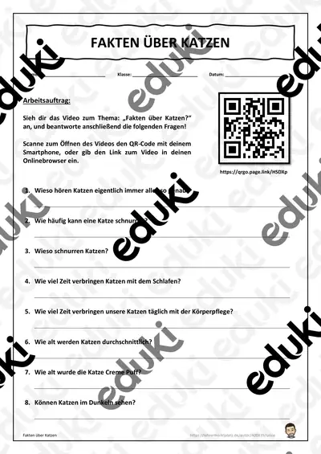

Materialpaket Wald Steckbriefe Laubbaum/Nadelbaum

Homeschooling Materialpaket (wachsend) (auch Homeschooling)

Homeschooling Materialpaket (wachsendes Materialpaket) (auch Homeschooling)

Homeschooling Materialpaket (auch Homeschooling) Coronavirus (wachsend) - Materialpaket

Fakten über Katzen - Homeschooling

Materialpaket Coronavirus

Ergänzungsset zum Coronavirus Arbeitsblatt - Materialpaket

Coronavirus Materialpaket (light)
Keine Materialien gefunden – versuch einen anderen Suchbegriff oder Filter.